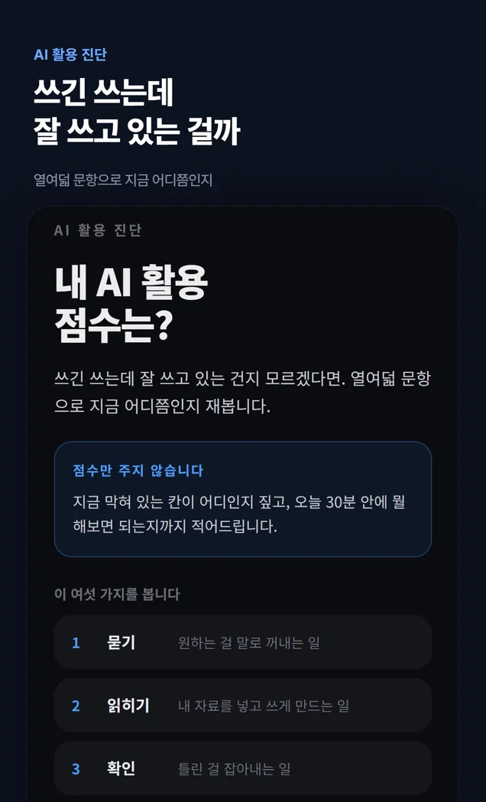
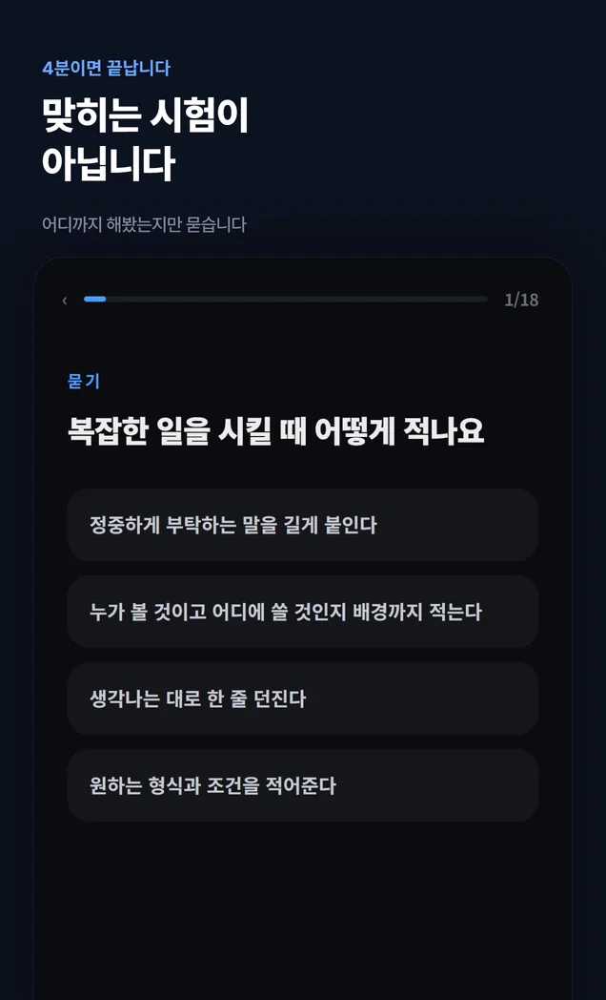
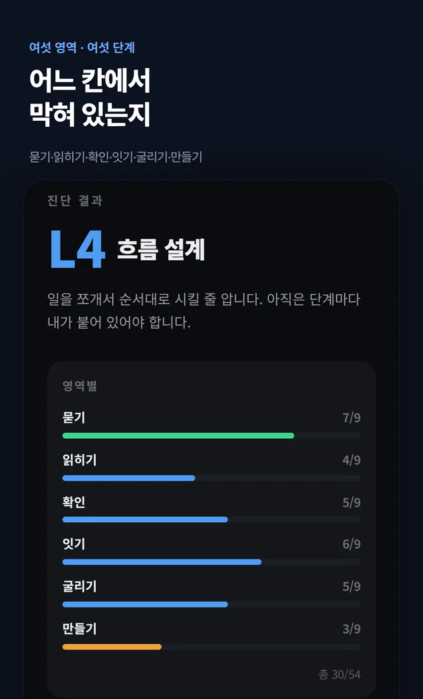
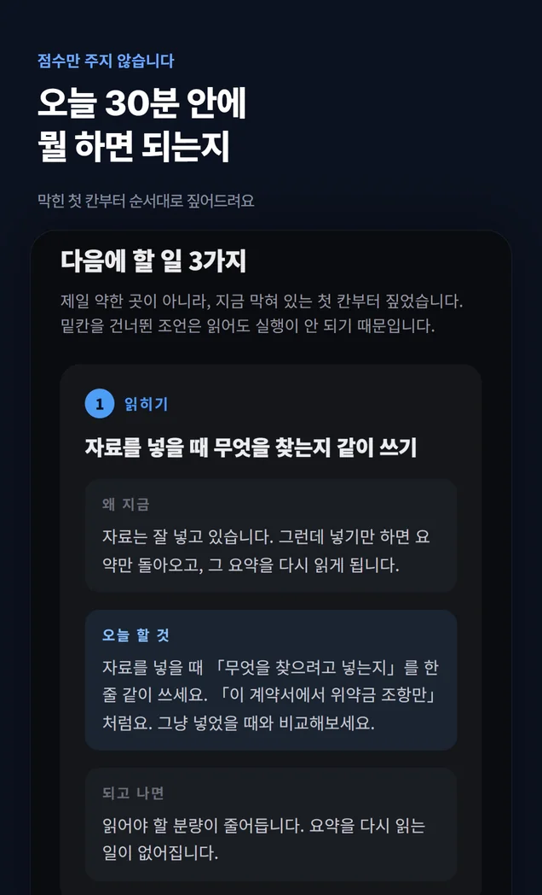

화면 둘러보기
앱 안은 이렇게 생겼습니다




옆으로 넘기세요
특징
맞히는 시험이 아닙니다
어디까지 해봤는지만 묻습니다
「당신은 3레벨입니다」는 듣고 나서 할 일이 없습니다. 이 앱의 값어치는 진단이 아니라 처방에 있습니다.
- 18
문항 · 4분
「복잡한 일을 시킬 때 어떻게 적나요」 같은 질문입니다. 정답은 없고, 해본 것만 고릅니다.
- 6
영역
묻기 · 읽히기 · 확인 · 잇기 · 굴리기 · 만들기. 앞이 안 되면 뒤도 흔들리는 순서입니다.
- 6
단계
구경꾼부터 여럿 굴리기까지. 사람이 얼마나 감독해야 하는지를 기준으로 나눈 공개 연구 틀을 참고했습니다.
- 처음
막힌 칸을 짚습니다
제일 낮은 영역이 아니라, 순서에서 처음 막힌 영역을 찾습니다. 거기부터 풀어야 뒤가 따라옵니다.
- 3
오늘 할 일
오늘 해볼 일을 처방 카드 세 장으로 안내합니다. 일부 처방은 보상형 광고를 시청한 뒤 열립니다.
- 0
서버로 가는 답
답한 내용은 이 기기 안에만 남습니다. 어디로도 보내지 않습니다.
여섯 단계
지금 어느 칸에
서 있는지
사람이 얼마나 감독해야 하는지로 나눕니다. 매일 에이전트를 돌리는 분은 맨 위 두 칸에서 갈립니다.
- L6
여럿 굴리기
역할을 쪼개 여러 개를 동시에 맡기고, 어디부터 볼지 선을 그어 둡니다.
- L5
맡기고 검증
반복되는 일을 통째로 맡기고, 확인 지점을 문서로 옮겼습니다.
- L4
흐름 설계
일을 쪼개서 순서대로 시킬 줄 압니다. 아직 단계마다 내가 붙어 있어야 합니다.
- L3
초안 맡기기
초안을 맡기고 고쳐 씁니다. 여기서 대부분 멈춥니다.
- L2
검색 대신
검색창에 치던 걸 대화창에 칩니다.
- L1
구경꾼
써 보긴 했는데 다시 열 이유를 못 찾았습니다.
이용 방법
공식 플랫폼에서 시작하세요
- 1
토스 앱을 엽니다
따로 설치할 게 없습니다. 토스가 이미 있으면 끝입니다.
- 2
검색창에 이름을 칩니다
‘내 AI 활용 점수는’ 또는 ‘AI 활용 점수’.
- 3
열여덟 문항에 답합니다
4분이면 끝나고, 결과는 이 폰에만 남습니다.
알아둘 것
먼저 말씀드립니다
- 점수는 자기 보고입니다. 해봤다고 고른 만큼 나옵니다. 후하게 고르면 후하게 나옵니다.
- 답한 내용은 기기 안에만 저장되고 서버로 보내지 않습니다. 앱을 지우면 같이 지워집니다.
- 일부 처방은 보상형 광고를 시청한 뒤 열립니다. 열리는 조건은 앱 안의 안내를 확인해 주세요.
- 단계 이름은 공개 연구(arXiv 2608.07779)의 틀을 참고했고, 이 앱이 정한 것입니다.
다른 앱